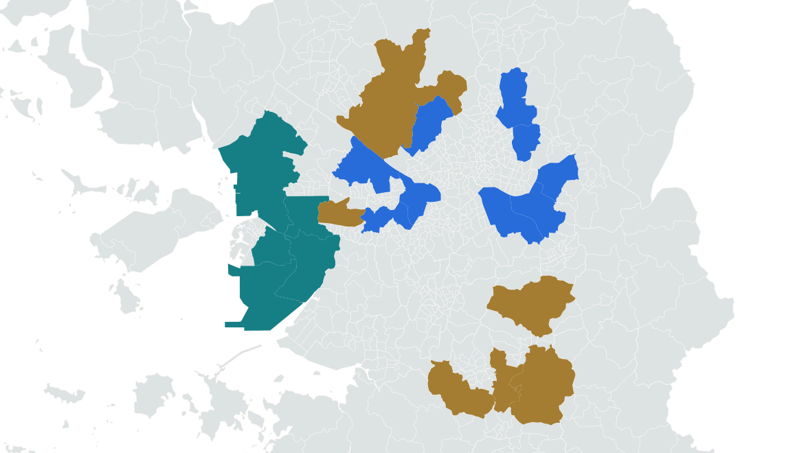

<template><style>#analysis-S00{position:absolute;inset:0;width:100%;height:100%}</style><div id="analysis-S00" data-composition-id="analysis-S00" data-width="1080" data-height="1920" data-duration="5.369433"><div  class="t" style="left:140px;top:275px;width:700px;font-size:58px;color:#173348;font-weight:700">많이 사는 곳, 늘어난 곳</div><div  class="r" style="left:125px;top:490px;width:730px;height:570px;background:#fffef9;border-radius:12px"></div><div  class="t" style="left:145px;top:520px;width:680px;font-size:40px;color:#173348;font-weight:700">1년 동안의 변화</div><div  class="t" style="left:145px;top:630px;width:300px;font-size:42px;color:#173348;font-weight:700">강남구</div><div  class="t" style="left:145px;top:698px;width:680px;font-size:94px;color:#286cda;font-weight:700">+9.4%</div><div  class="t" style="left:145px;top:850px;width:300px;font-size:42px;color:#173348;font-weight:700">옛 서구</div><div  class="t" style="left:145px;top:918px;width:680px;font-size:94px;color:#88631b;font-weight:700">−1.3%</div><div  class="t" style="left:140px;top:1260px;width:700px;font-size:26px;color:#173348;font-weight:400">통계청 2023·2024 신혼부부통계</div><div  class="t" style="left:140px;top:1292px;width:700px;font-size:26px;color:#173348;font-weight:400">수도권 53개 구 · 전체 · 단위: 쌍</div><div  class="t" style="left:140px;top:1325px;width:700px;font-size:26px;color:#536873;font-weight:400">통계청 신혼부부통계 | 지도: SGIS · CC BY 4.0</div></div><script>window.__timelines["analysis-S00"]=gsap.timeline({paused:true});</script></template>